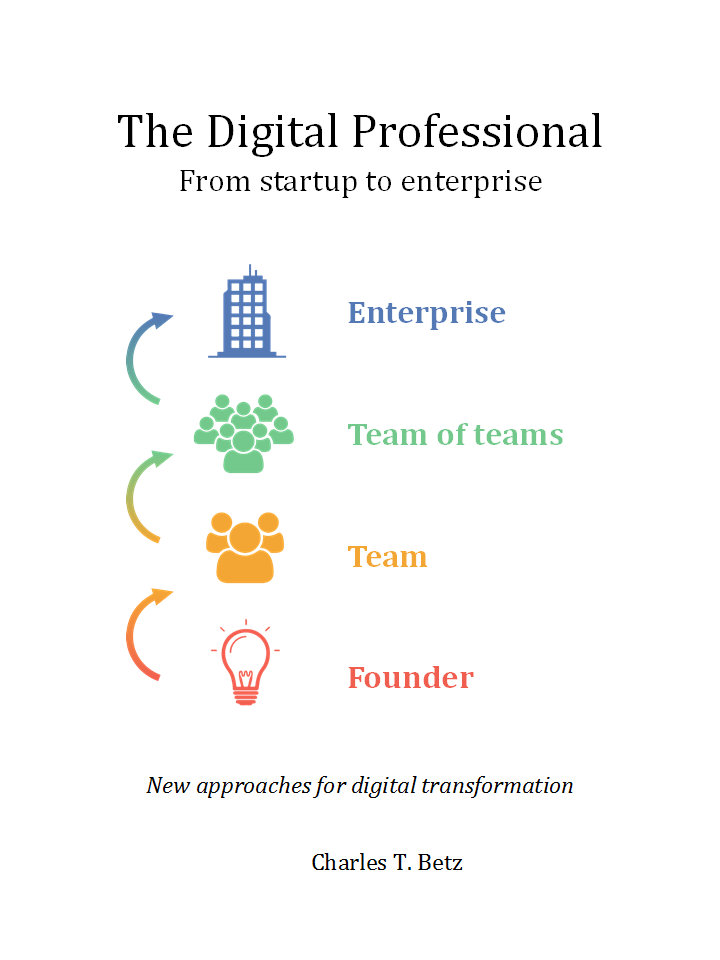

Chapter 1 Praise for this book
The Digital Professional is a perfect fit for my Management Information Systems class to introduce students to the fast-paced world of IT Infrastructure that they will be dealing with shortly upon graduation. This book uses multiple perspectives (Founder, Team Leader, VP, C-level executive) to demonstrate to the student not only how a business grows, but how they need to continually grow their skill set. The use of hands-on exercises encouraged by the format of this book complements my teaching style that allows students to learn by doing, failing and doing again. An additional benefit is that this book begins with a focus on the startup mentality which I will use in my Business Innovation class.
Prof. Pat Paulson, Winona State University
The Digital Professional
From startup to enterprise

The Digital Professional
From startup to enterprise
new approaches for digital transformation
Charles T. Betz
Minneapolis, Minnesota
Published by
Digital Management Academy, LLC
14 Sidney Place
Minneapolis, MN 55414
The Digital Professional
From Startup to Enterprise
First Edition
Copyright (c)2016 by Charles T. Betz
All rights reserved, for information about permission to reproduce selections from this book, write to Permissions, Digital Management Academy LLC, 14 Sidney Place, Minneapolis, MN 55414
Produced in the United States of America
Cover illustration by Go To Media, LLC
ISBN: 978-0-9981346-0-4
Publisher’s note to readers:
Knowledge and best practice in this field change constantly. As new research and experience broaden our understanding, changes in methods or practices may become necessary. Practitioners and researchers must always rely on their own experience and knowledge in evaluating and using any information or methods described herein. In using such information or methods they should be mindful of risks to themselves or others, including parties for whom they have a professional responsibility.
Although the author and publisher have made every effort to ensure that the information in this book was correct at press time, the author and publisher do not assume and hereby disclaim any liability to any party for any loss, damage, or disruption caused by errors or omissions, whether such errors or omissions result from negligence, accident, or any other cause.
For information about special discounts for bulk purchases or for information on booking authors for an event, please visit www.dm-academy.com.
To my students, past, present, and future
Contents:
- 1 Praise for this book
- Preface
- Introduction to the Instructor’s Edition
- I Startup
- II Team
- Bibliography
Preface
In 2013, I was approached by Dr. Bhabani Misra, the head of the Graduate Programs in Software at the University of St. Thomas in St. Paul. Dr. Misra asked me to teach an “IT Infrastructure” course (SEIS660). The first semester of the class was well received enough for me to be invited back. However, there were complaints from the students that it was too “theoretical.” I was attempting to teach using an enterprise architecture style with many abstractions that did not engage students effectively. I also had a team project approach that immediately started the students out as the IT leadership team of a large corporation. This generated feedback that the students wanted something more practical; they were not going to be immediately hired as senior executives!
I took this feedback seriously. I especially gave thought to a practical aspect, and so started to develop a lab component. This was and is popular with the students. I also started to think about different approaches for structuring the class that would make more sense for a survey class with a wide spectrum of experience.
This is a margin note using the geometry package, set at 0cm vertical offset to the first line it is typeset.[0cm]
Initially, I assigned my first book Architecture and Patterns for IT: Service Management, Resource Planning, and Governance as a required text for the class. However, I did not write this as a textbook and its limitations became clearer and clearer. It has a strongly architectural approach, approaching the IT management problem as a series of views on a model. I do not recommend this as a pedagogical approach for a survey class. In thinking about how to make the experience more practical and understandable for students, I hit on the idea of structuring the course around an evolutionary, “emergence” model (summarized as “from startup to enterprise”).
I approached my publisher with the idea of a 3rd edition that would pivot the existing material. They agreed to this and I started the rewrite. However, by the time I was halfway done with the first draft, I had a completely new book. Material from the previous work simply did not fit the emergence model used to structure the narrative.
A number of factors converged at this point:
-
•
My view that the ”medium is the message” and this extends to choice of authoring approach, intellectual property, DRM, and publisher
-
•
Contacts with local and international faculty and thought leaders, and a desire to openly collaborate with them on making the book as good as possible
-
•
A desire to freely share at least a rough version of the book, both for marketing purposes and in the interests of giving back to the global IT community
-
•
A desire to be able to rapidly update the book with as little friction as possible
-
•
A practical realization that the book might get more uptake globally if available at least in some form as free and open source IP
-
•
The fact I had already started to publish my labs on Github, and had in fact had developed a workable continuous delivery (”DevOps”) toolchain (the Calavera project, which has attracted collaborators from the US, Spain, and Israel).
Many have assisted with this work:
Thanks to Dr. Bhabani Misra for asking me to teach at the University of St. Thomas and providing direction at key points.
Thanks to Stephen Fralippolippi and Roger K. Williams for being the first Github contributors.
Thanks to Jason Baker for text and technical collaboration.
Thanks to Mark Kennaley for guidance on open vs closed loop thinking.
Thanks to Glen Alleman for guidance on modern project management practices.
Thanks to Jeff Sussna for ongoing inspiration, Twitter feedback, discussion question ideas, and sourced quotes.
Thanks to Nicole Forsgren for links to articles on performance management.
Thanks to Evan Leybourn for detailed commentary on project management/Chapter 8.
Thanks to Chris Little and Jabe Bloom for quote provenance.
Thanks to Lorin Hochstein for references.
Thanks to Gene Kim for ongoing mentoring and advice on writing and publishing, and unwavering support and confidence in my efforts.
Thanks to the Go to Marketing team (Will Goddard, Terry Brown, Francisco Piniero) for design assistance and invaluable partnership. \lipsum[1-10]
Introduction to the Instructor’s Edition
Welcome to Agile IT Management: From Startup to Enterprise. So, what exactly IS this textbook, anyhow?
-
•
It is the first general, survey-level text on IT management with a specific Agile, Lean IT, and DevOps orientation.
-
•
It has a unique and innovative narrative structure based on the concept of organizational evolution and scaling.
-
•
It both covers and is written using Agile, Lean, and continuous delivery techniques.
-
•
Because it is written with continuous integration and print on demand techniques, it can be continually updated to reflect current industry trends.
1.1 This book’s positioning
Modern Information Systems texts, especially at the undergraduate, survey level, take an “outside-in” approach to the course material, seeking to orient all students (whether IT/MIS specialists or not) as to the role and function of information systems and their possibilities and value in the modern enterprise. This book, by contrast, is an “inside-out” book, intended to prepare the student for a career in digital industry. âIndustryâ is broadly defined as both those industries that offer digital products per se, as well as industries that rely on digital technology instrumentally for delivering all kinds of products. A central theme of the book is that âIT,â considered as a component, represents an increasing proportion of ALL industrial products (both consumer and business facing). This is known as “digital transformation.”
Current MIS survey texts have some common characteristics:
-
•
They tend to focus on the largest organizations, and their applications of computing. This can lead to puzzling topic choices; for example, in one text, one of the first sections is dedicated to the problem of enterprise IT asset management - a narrow topic for the earlier sections of a survey course.
-
•
Their learning progression (structure and narrative) is often arbitrary, e.g., covering “databases,” “networking,” “ERP systems,” “security,” and so forth in various orderings.
-
•
They do not (and this is a primary failing) cover Agile and its associated digital ecosystem. Brief mentions of Agile may appear in sections on project management, but in general there is a lack of awareness of the fundamental characteristics of digital transformation, and the critical role of Agile and related methods to accelerating digital transformation.
-
•
Their coverage of Cloud infrastructure also tends to be limited, even with new editions coming out every year.
-
•
Finally, current texts often uncritically accept and cite “best practice” IT frameworks such as CMMI, ITIL, PMBOK, and COBIT. New digital organizations do not, in general, use such guidance and the industry at this writing is rife with controversy as to the value and future of these frameworks. This book provides a clear and objective overview of these critical issues.
IT, or the digital function, has had a history of being under-managed and poorly understood relative to peer functions in the enterprise. It struggles with a reputation for expensive inflexibility and Dilbert-esque dysfunction. The DevOps and Agile movements promise transformation, but are encountering an entrenched legacy of:
-
•
enterprise architecture,
-
•
program and project management,
-
•
business process management,
-
•
IT service management practices, and
-
•
IT governance concerns
Understanding and engaging with the challenges of this legacy are an ongoing theme throughout this introductory text.
Some of the more radical voices in the Agile movement sometimes give the impression that the legacy can be simply swept away. The following cautionary message from Mike Burrows shows that, in terms of core Agile philosophy, this would be ill-advised:
ââ¦some will tell you that when things are this bad, you throw it all away and start again. It’s ironic: The same people who would champion incremental and evolutionary approaches to product development seem only too eager to recommend disruptive and revolutionary changes in people-based systems â in which the outcomes are so much less certain.â [2]
IT management at scale within an organization is a complex system. Complex systems do not respond well to dramatic perturbations. They are best changed incrementally, with careful monitoring of the consequences of each small change. (This is part of the systems theory foundation underlying the Agile movement.) This is why the book, especially in the later chapters, starts with relatively straightforward and uncritical presentations of the following topics:
-
•
Investment, sourcing, and people
-
•
Project and process management
-
•
Governance, risk, security, and compliance
-
•
Enterprise information management
-
•
Enterprise architecture and portfolio management
While these practices, and their associated approaches and policies, have caused friction with digital and Agile practitioners, they all have their reasons for existing. The goal of this book is to understand their interaction with the new digital approaches, but in order to do this we must first understand them on their own terms. It does no good to develop a critique based on misconceptions or exaggerations about what (for example) “process management” or “governance” is all about. Instead, we try to break these large and sometimes controversial topics down into smaller, more specific topics - “lowest common denominators,” perhaps:
-
•
Work and effort
-
•
Ordering of tasks
-
•
Task dependencies
-
•
Estimation versus commitment
-
•
Value stream versus skill alignment
-
•
Repeatability
-
•
Defined versus empirical process control
-
•
Synchronization and cadence
-
•
Resource demand
-
•
Shared mental models
-
•
Mission objectives versus perimeter defense
-
•
Technical debt
-
•
Traceability
-
•
Risk
and so forth. By examining IT management in these more neutral, specific terms, we can develop a responsible critique of current industry “best practices” in content and form that will benefit students as they go out on their careers.
1.2 A process of emergence
Joseph Campbell popularized the notion of an archetypal journey that recurs in the mythologies and religions of cultures around the world. From Moses and the burning bush to Luke Skywalker meeting Obi wan Kenobi, the journey always begins with a hero who hears a calling to a quest…The heroâs journey is an apt way to think of startups. All new companies and new products begin with an almost mythological visionâ a hope of what could be, with a goal few others can see…Most entrepreneurs feel their journey is unique. Yet what Campbell perceived about the mythological heroâs journey is true of startups as well: However dissimilar the stories may be in detail, their outline is always the same. —Steve Blank, The Four Steps to Epiphany [1]
A complex system that works is invariably found to have evolved from a simple system that worked. A complex system designed from scratch never works and cannot be patched up to make it work. You have to start over, beginning with a working simple system. —John Gall, The Systems Bible [4]
One of the most important and distinguishing features of this book is its “emergence model.” In keeping with the entrepreneurial spirit of works like Ries’ The Lean Startup, the book adopts a progressive, evolutionary approach. The student’s journey through it reflects a process of emergence. Such processes are often associated with founding and scaling a startup. There are many helpful books on this topic, such as:
-
•
Nail it then scale it by Furr and Ahlstrom
-
•
Scaling Up by Harnish
-
•
Startup CEO by Blumberg
-
•
The Lean Startup by Ries
The emergence model and overall book structure is discussed in depth in the main introduction. Here are some notes on the thought process. I have spent considerable time thinking (agonizing) about the correct ordering of the chapters within these sections. This is possibly the tenth or twelfth version of the chapter ordering. This is an area where I want critical review, but also have strong opinions.
There is benefit to restricting the chapters to 12, as a typical semester runs 14 weeks and the book then fits quite nicely, with one chapter per class and allowing for an introductory session and final exam. (Trying to modfiy the semester system is out of scope for this project.) Of course, a two-semester series, with 2 weeks per chapter, would also work well; each half of the book is also a logical unit.
The governing thought experiment is, “what would I turn my attention to next as my IT-based concerns scale up?” For example, I think work management (implying rudimentary workflow, e.g. Kanban) correctly comes before formalized project management, and project management comes before fully formalized process management (including frameworks such as CMMI, COBIT and ITIL).
Note that this would be a testable and falsifiable hypothesis, if empirical research were done to inventory and characterize organization scaling patterns. If we found (for example) that a majority of organizations formalize governance, risk, security and compliance practices before formalizing project management, that would indicate that those chapters should be re-ordered.
(In my experience, small/medium businesses may have some formal IT project management capability but security and governance are still tacit, not formalized. This does not mean security is not a concern, but they have not yet hired a CISO, nor instituted formal controls).
The presence of Product Management at an early stage is intended to provoke. Product management is poorly addressed in most current CSci/MIS/IT education, as well as the reigning industry standards. Yet formalizing it is one of the earliest concerns for a startup, and the imperatives of the product vision drive all that comes after.
Evidence to this effect is seen (as of 2015) at the University of California at Berkeley I-School, which has replaced its Project Management course with Lean/Agile Product Management, taught currently by the esteemed Jez Humble.
Also, you may notice that the chapter titles don’t necessarily reflect “Agile” terminology. This is also deliberate, as students are going into a diverse world of much long-established IT. Furthermore, putting “Agile” as a qualifier on each chapter seems gratuitous (e.g. “Agile Operations Management” instead of just “Operations Management.”)
The first word of the book’s title is “Agile.” That declares the orientation, and the proof will be in the reading. My intent is to involve experienced Agile practitioners in contributing to the sections most relevant to them, and I anticipate a high quality end result that is recognizably supportive of the Agile movement’s goals and ambitions.
The book however is not a complete dismissal of older models of IT delivery. Wherever possible, Agile is presented as an evolutionary step relative to what has gone before. The specifics of “what’s different” are identified, in the interest of de-mystifying what can be a fraught and quasi-religious topic. In the words of Don Reinertsen, you can have “faith based Agile or science based Agile.” This book is strictly interested in the latter. Pointers to relevant theory are included, although this is NOT a theoretical text. That may come later.
This emergence model can also be understood as an individual’s progression within a larger enterprise. Even if one starts from Day 1 at a Fortune 100 corporation, I believe the progression of one’s understanding still progresses through individual, to team, to “team of teams,” to enterprise. Of course, one may cease evolving one’s understanding at any of these stages, with corresponding implications for one’s career.
Some of you may be familiar with the idea of a Minimum Viable Product, Minimum Marketable Release, or similar. In these terms, it is important to understand that each of the four parts of the book represents an MVP, but not each chapter. One can’t begin to deliver IT value without the components discussed in each of Chapters 1-3. The chapters of each section tend to be interdependent, in other words.
Structure within the structure: Each chapter flows in a roughly “top-down” fashion:
-
1.
“Business” concerns (value, motivation)
-
2.
“Process” concerns (execution, flow)
-
3.
Lean, Agile, and DevOps perspectives as appropriate
-
4.
“System” concerns (information and automation)
This book does not cover specific technologies in any depth. Many examples are used, but carefully framed to not require previous expertise. This is about broader, longer-lifecycle trends.
Part I Startup
Chapter 2 Digital value
2.1 What is digital value?
Consider the following scenario:
A woman is wondering if she can afford to dine out that evening.
We talked about 3.1 blah de blahx
-
•
She uses her mobile device to access her banking information and determines that in fact she does have enough money to do so.
-
•
She also uses her mobile device to make a reservation and contact some friends to join her.
-
•
Finally, she uses social navigation software to avoid heavy traffic, arriving at the restaurant in time for an enjoyable evening with her friends.
Information technology pervades this experience. The origins, layers and complex connections of the distributed systems involved are awe-inspiring to consider.
IMPORTANT: Don’t worry about the technological terms for now. This is an introductory text. You may see terms below that are unfamiliar (Model-View-Controller, IP, packet switching). If you are reading this online, you can follow the links, but it’s not required. As you progress in your career, you will always be encountering new terminology. Part of what you need to learn is when it’s important to dig into it, and when you can let it pass for a time. You should be able to understand the gist presented below that these are complex systems based on a wide variety of technologies, some of them old, some new.
The screen on her cell phone represents information accessed and presented via a Model-View-Controller framework….
Finally, the navigation software looks much like the reservation system, as it too is based on the Cloud. However, the system is much more active, as it is continually processing inputs from millions of drivers in thousands of cities, and updating traffic maps for those drivers in real time so that they can choose the most optimal route to their destinations (e.g., dinner). The capabilities of this system are comparable to an air traffic control system, and yet it is available as a free download for our IT user. [3]
Part II Team
Chapter 3 IT infrastructure
3.1 Introduction
As mentioned in the section introduction, you cannot start developing a product until you decide what you will build it with. (You may have a difficult time writing an app for a mobile phone if you choose the COBOL programming language!) You also need to understand something of how computers are operated, enough so that you can make decisions on how your system will run. Most startups choose to run IT services on infrastructure owned by a Cloud provider, but there are other options. Certainly, as you scale up, you’ll need to be more and more sophisticated in your understanding of your underlying IT services.
| 1 | 2 | 3 |
|---|---|---|
| 4 | 5 | 6 |
| 7 | 8 | 9 |
[1-10]
Bibliography
- [1] (2013) The Four Steps to the Epiphany: Successful Strategies for Products That Win. 2nd edition, Steve Blank. Cited by: 1.2.
- [2] (2015) Kanban from the Inside: Understand the Kanban Method, connect it to what you already know, introduce it with impact. Blue Hole Press, Sequim, Washington. Cited by: 1.1.
- [3] (2016) Why Agile Works: The Values Behind the Results. C4Media - InfoQ.com. External Links: Link Cited by: 2.1.
- [4] (2012) The Systems Bible: The beginner’s guide to systems large and small. General Systemantics Pr/Liberty. External Links: ISBN 978-0961825171 Cited by: 1.2.